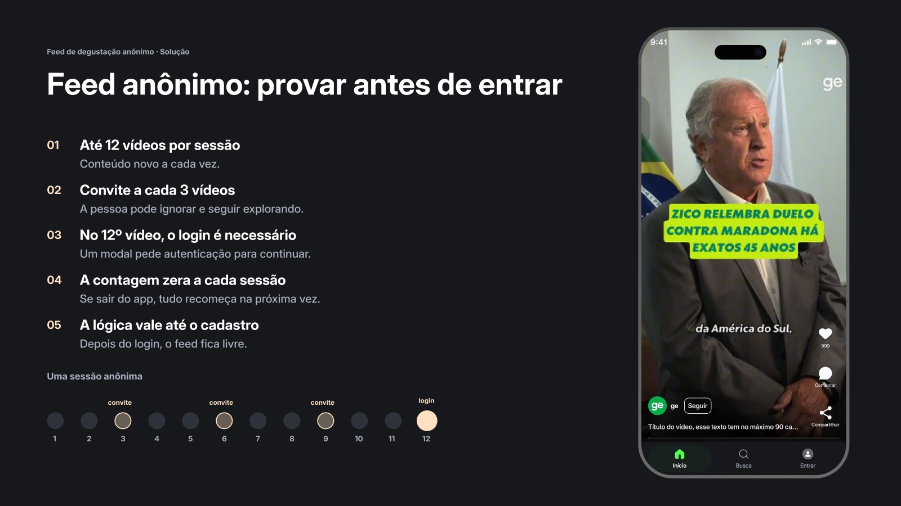
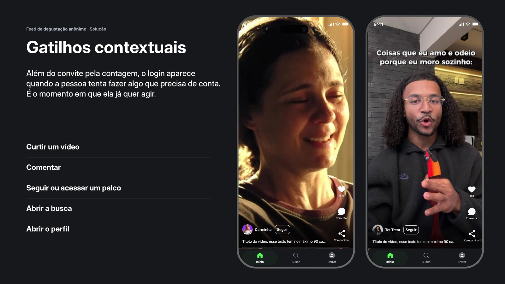

Globo · GloboPop
Feed de degustação anônimo
Um feed que deixa a pessoa assistir sem login e convida para o cadastro no momento certo, em vez de bloquear a entrada.

01 · Contexto
Pedir login antes de mostrar valor
O GloboPop é o app de vídeos curtos da Globo, com novelas, realities, esporte e entretenimento em formato vertical. Para assistir, a pessoa precisava entrar com a conta Globo logo no início.
Meu papel: UX Designer Sênior na squad do GloboPop. Conduzi a feature do dado ao handoff: análise do problema, pesquisa, benchmark, princípios, regras de acesso, telas e specs de UI.
02 · Problema
A fricção custava usuários antes do primeiro vídeo
O login aparecia antes de a pessoa entender o que o app oferece.
03 · Processo
Pesquisa, benchmark e princípios
- Pesquisa em laboratório (abr/2026): o login não foi uma objeção. O problema era o momento em que ele aparecia, e as pessoas esperavam um feed personalizado desde o primeiro acesso.
- Benchmark de TikTok, YouTube, Globoplay e Kwai: nenhum app fecha a porta sem contexto; o limite sempre vem com um benefício e com prova social.
- Princípios: engajamento progressivo, limite suave em vez de bloqueio e efeito dotação (quem já consumiu valoriza mais o que usa).
04 · Solução
Provar antes de entrar
- Só o feed fica aberto. Curtir, comentar, seguir, buscar e abrir o perfil pedem login.
- Até 12 vídeos por sessão, com um convite a cada 3 que a pessoa pode ignorar. No 12º, o login é necessário.
- Gatilhos contextuais: o login aparece quando a pessoa tenta fazer algo que precisa de conta, no momento em que ela já quer agir.
- Trazer de volta: notificações, login salvo e tutoriais de gesto em cima do conteúdo real.
- Specs e handoff do modal de login, da navbar anônima e dos botões do feed.

05 · Resultados
Como vou medir
A feature está em implementação, então ainda não há resultado. A lógica foi desenhada com três variáveis abertas para teste A/B: a quantidade de vídeos livres (12 vs. N), a cadência do convite (a cada 3 vs. 4) e a copy do modal (benefício vs. neutra).
- Abandono antes do 1º vídeo, partindo de 75%
- Conversão de visitantes anônimos em login
- Vídeos até o login e a origem do login (contagem, 12º vídeo ou gatilho de ação)
- Retorno em 7 dias
06 · Aprendizados
O que levo deste projeto
- O problema era o momento, não o login. A pesquisa mudou a pergunta: em vez de tirar o login, decidir quando ele aparece.
- Limite com contexto. Um bloqueio mudo afasta; um convite que explica o benefício deixa a escolha com a pessoa.
- Desenhar já pensando no teste. Deixar quantidade, cadência e copy como variáveis torna a decisão mensurável.
Próximo projeto
ge · Card de atleta & Você sabia?
Globo · GloboPop
Anonymous preview feed
A feed that lets people watch without logging in and invites them to sign up at the right moment, instead of blocking the way in.
01 · Context
Asking for login before showing value
GloboPop is Globo’s short-video app, with soaps, reality shows, sports and entertainment in vertical format. To watch, people had to sign in with their Globo account right at the start.
My role: Senior UX Designer in the GloboPop squad. I led the feature from data to handoff: problem analysis, research, benchmark, principles, access rules, screens and UI specs.
02 · Problem
Friction cost users before the first video
The login appeared before people understood what the app offers.
03 · Process
Research, benchmark and principles
- Lab research (Apr/2026): login wasn’t an objection. The problem was when it appeared, and people expected a personalized feed from the very first visit.
- Benchmark of TikTok, YouTube, Globoplay and Kwai: no app closes the door without context; the limit always comes with a benefit and social proof.
- Principles: progressive engagement, a soft limit instead of a block, and the endowment effect (people value more what they’ve already used).
04 · Solution
Try before you sign in
- Only the feed is open. Liking, commenting, following, searching and opening the profile require login.
- Up to 12 videos per session, with an invite every 3 that people can ignore. At the 12th, login is required.
- Contextual triggers: login appears when people try to do something that needs an account, right when they already want to act.
- Bring people back: notifications, saved login and gesture tutorials on top of real content.
- Specs and handoff for the login modal, the anonymous navbar and the feed buttons.
05 · Results
How I’ll measure it
The feature is in implementation, so there are no results yet. The logic was designed with three open variables for A/B testing: the number of free videos (12 vs. N), the invite cadence (every 3 vs. 4) and the modal copy (benefit vs. neutral).
- Drop-off before the 1st video, starting from 75%
- Conversion of anonymous visitors into logins
- Videos until login and the login source (count, 12th video or action trigger)
- 7-day return
06 · Learnings
What I take from this project
- The problem was the timing, not the login. Research changed the question: instead of removing login, decide when it shows up.
- A limit with context. A silent block pushes people away; an invite that explains the benefit leaves the choice to them.
- Design with the test in mind. Keeping quantity, cadence and copy as variables makes the decision measurable.
Next project
ge · Athlete card & Did you know?